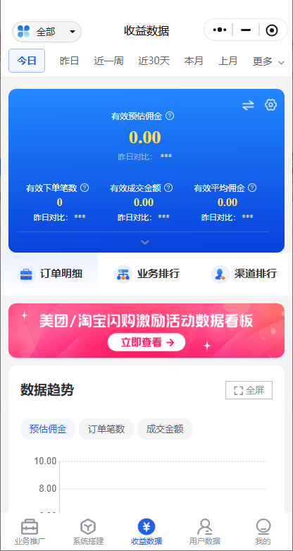
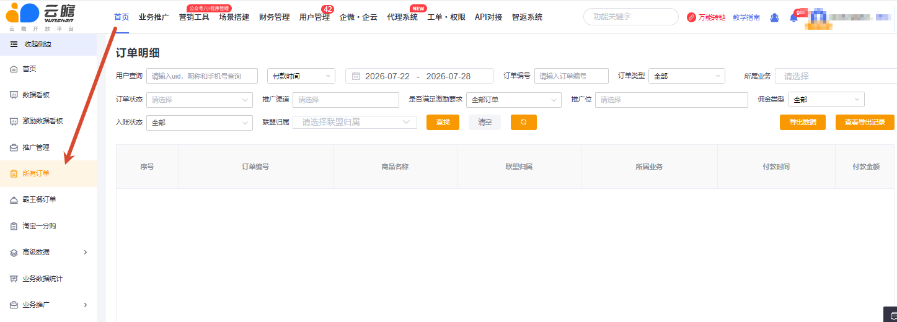

怎么查看订单数据？
电脑端：官网左侧【所有订单】→订单明细，可查看订单编号、商品名称、所属业务、付款时间、付款金额等字段。手机端：“云瞻助手”底部【收益数据】→【订单明细】。
从“去哪里查”到“为什么没跟单、金额为什么不同、退款后是否退佣”，逐项覆盖飞书原文中的订单与对账问答。
电脑端：官网左侧【所有订单】→订单明细，可查看订单编号、商品名称、所属业务、付款时间、付款金额等字段。手机端：“云瞻助手”底部【收益数据】→【订单明细】。


在订单明细查看“所属业务”列。不要只根据商品名、平台名或金额猜测业务归属。
系统目前不能直接还原每次传播来源。若推广前设置了不同推广位，可通过订单明细“推广位”列进行判断；未设置推广位时通常无法准确追溯。重要渠道应坚持一渠道一推广位。
进入手机网页端或电脑端对应活动的收益/激励页面查看。不同业务是否进入统一激励看板并不一致，例如饿了么本地生活激励明细目前仍可能无法在激励看板展示，应结合业务详情和结算通知核对。
佣金必须先入账才能提现。源文档记录的常见节奏是：部分美团业务约次月 10 日，其他业务可能在 23 日后陆续入账，节假日或上游未打款会顺延。该时间不是所有业务统一承诺，最终以业务详情和当前结算通知为准。
个人实名改为企业实名后，源文档记录原个人实名下的账单和提现记录可能不再展示，因此“累计收益”和当前可见记录可能看起来对不上。变更前应导出留存；已变更的由财务按实名阶段分别核对。
未回传可能来自归因覆盖、业务规则不满足或官方风控。必须先完成数据时效和归因检查，再决定是否升级。
可能原因包括商家未开通 CPS、活动只回传基础订单、用户没有使用链接内领取的优惠，或订单不满足佣金条件。源文档曾列举饿了么/淘宝闪购、美团的旧比例案例，这些数字已不适合直接答复，只用于帮助排查“商家无佣”“优惠未使用”等原因。
通常按“最终实付金额 × 对应佣金比例”计算。加购或转链时可能按商品原价预估；优惠券、规格变化、部分退款会改变实付基数。核对时同时看实付金额、商品规格、佣金比例和售后状态。
原文示例：原价 14.1 元按 20% 预估 2.82 元，实际选用较低规格并实付 4.15 元，则同一比例下约为 0.83 元。示例用于解释计算关系，不代表当前业务比例。
常见原因是提交后未付款/取消，或被渠道官方风控判定失效。京东等业务出现付款金额和佣金为 0 时，也要先核对是否实际未支付或订单已取消。
会。客服中心 2026-08-06 同步口径为：只要上游接受退货，相关佣金通常需要退回；若此前已经提现，一般在后续结算中进行风控扣回。处理时保留上游售后状态、原订单和扣回账单的对应关系。
{kind=link}
{kind=link}